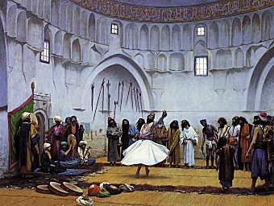

|
 Whirling Dervishes, by Jean-Leon Gerome [19th c.] (Public Domain Image) |
The Secret Rose Gardenof Sa'd Ud Din Mahmud Shabistariby Florence Lederer[1920] |
Sa'd ud Din Mahmud Shabistari was born in Persia, in Shabistar, near Tabriz, about 1250 CE. His best known work, The Secret Rose Garden was written as a reply to questions by a Sufi doctor of Herat. This set of verses uses the rich Sufi allegorical language to explore the path to God.
Title Page
Contents
Editorial Note
Introduction
Acknowledgment
Part I. The Perfect Face of the Beloved
Part II. Beauty
Part III. The Sea and its Pearls
Part IV. The Journey
Part V. Time and This Dream-World
Part VI. Reflections
Part VII. Divine Inebriation
Part VIII. Reason and Free-Will
Part IX. Man: His Capabilities and His Destiny
Part X. The One
Part XI. The Self
Part XII. Idols, Girdles, and Christianity
Part XIII. Thoughts
Part XIV. The Light Manifest
Epilogue